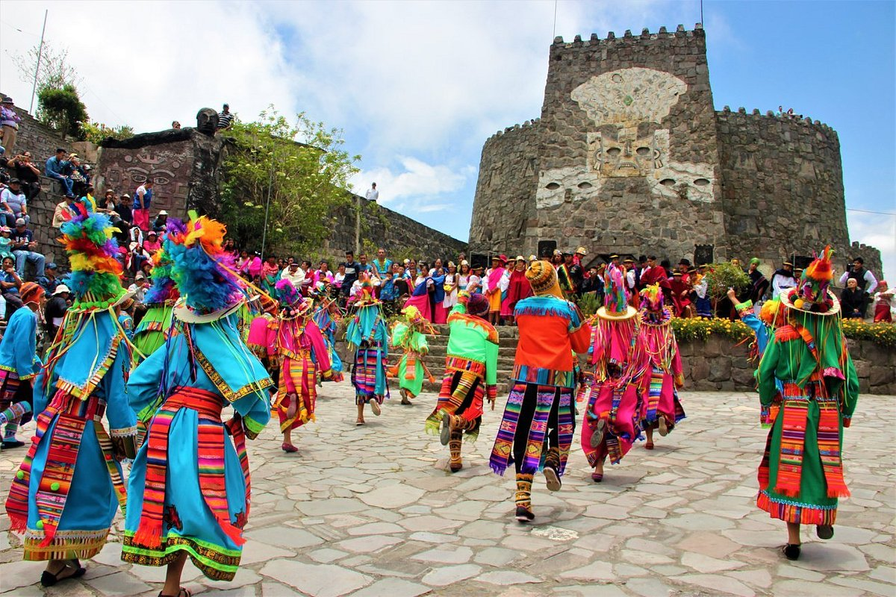
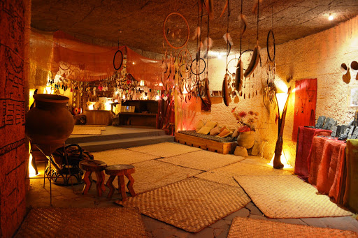
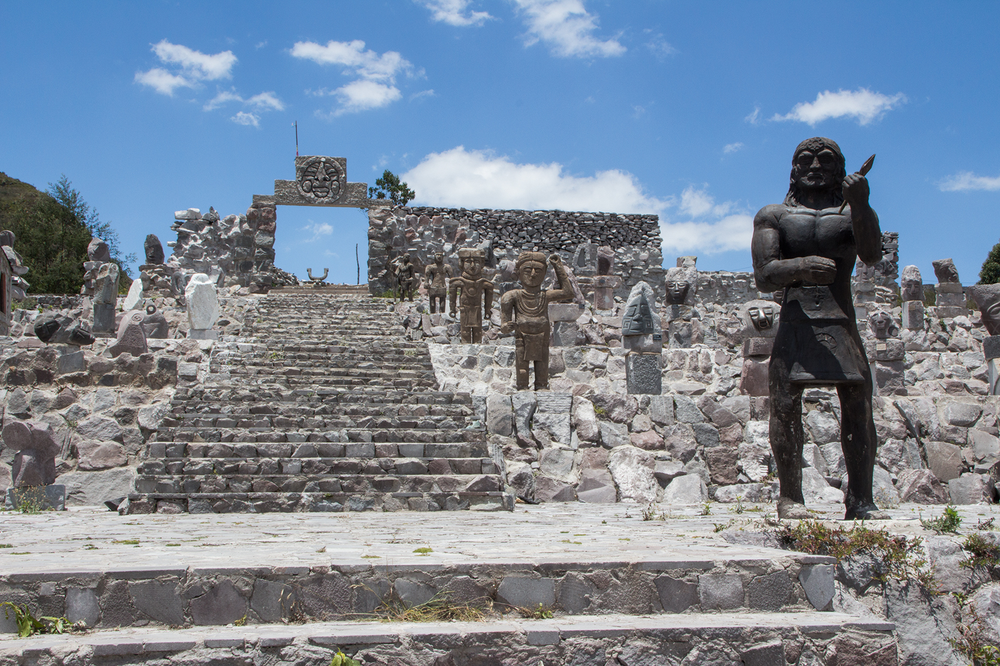
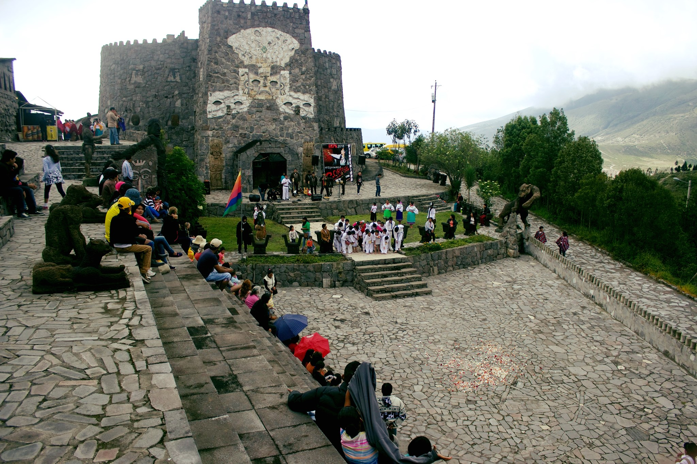
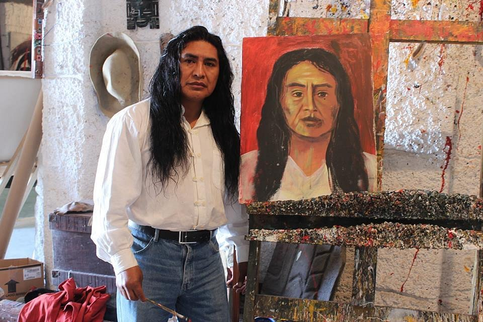

El Museo Templo del Sol fusiona, en perfecta armonía, dos conceptos en uno solo. Es un Templo que hace reverencia al Sol y a la cultura ancestral recibida como legado de nuestros antepasados. Y también es un Museo, una casa de arte que guarda las pinturas de su mismo creador. La edificación y su concepto son obra del reconocido artista Cristóbal Ortega Maila, pintor quiteño que se ha destacado nacional e internacionalmente por la técnica que aplica en sus obras: usa sus manos como herramienta principal para la elaboración de su arte.





Atractivo turistico

El valor de la entrada incluye el acompañamiento de un guía que espera en la parte central de la estructura principal, donde empieza el recorrido. El ingreso es por un pasadizo oscuro que no se sabe de antemano en dónde desemboca. La ausencia de luz y las paredes de piedra hacen que nos invada el frio; los sonidos que se escuchan, más lo que se lee en el trayecto, despiertan nuestra curiosidad.

Al llegar a la parte central quedan atrás el pasadizo y su angostura. Miramos hacia arriba y confirmamos que la edificación está compuesta por tres pisos. En el primero está el legado de los antepasados que expresa su forma de vivir guiándose por el Sol, que no solo determinaba el tiempo perfecto para sembrar o cosechar, sino que también determinaba momentos con cambios energéticos, como el equinoccio y el solsticio.

En el centro se encuentra una vasija desproporcionadamente grande, de la cual nace un soporte largo y fino que obliga a dirigir la mirada hacia lo alto para descubrir qué es lo que sostiene. Al otro extremo, una réplica de la Máscara del Sol invade el vacío espacio circular que une los tres pisos, buscando encontrarse con el mismo sol que ilumina desde otro círculo que se encuentra simétricamente ubicado en el techo de la estructura.

El guía explica la razón de ser del Museo, la importancia que tuvo el sol en las civilizaciones ancestrales, y el magnetismo que existe en el lugar por estar situado en la mitad del mundo.

Continuamos. Ingresamos a una sala donde la luz se vuelve más tenue, automáticamente se percibe un ambiente de relajación. Ahí están los “atrapa sueños” de todos los colores y tamaños; instrumentos musicales que recrean sonidos de animales o armonías naturales como el ruido de la lluvia o el viento; y un amplia gama de aceites naturales, cada uno con un propósito particular.